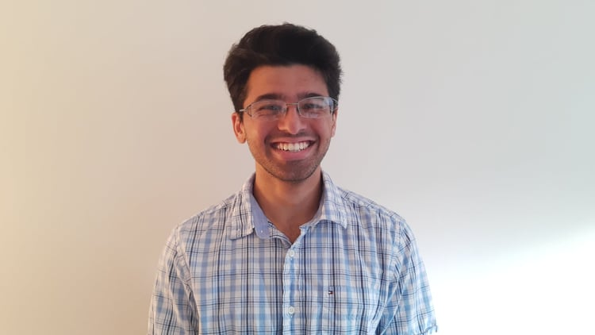

Akshay Ramachandran
Office: M237
Email: akshay@cwi.nl
Links to: CV (as of June 2023);
DBLP;
|

|
About Me
I am a Postdoctoral Researcher at Centrum Wiskunde & Informatica (CWI).
I am fortunate to be hosted by Professor Daniel Dadush in the Networks and Optimization (N&O) group
as well as Professor Michael Walter who has moved to Ruhr Universitat Bochum.
I'm interested in generalizations of convex analysis and convex optimization algorithms to non-Euclidean spaces with a special focus on applications to numerical linear algebra, quantum information theory, geometric invariant theory, and high dimensional statistics.
I completed my Ph.D. at the University of Waterloo's Cheriton School of Computer Science.
I was very fortunate to be advised by Lap Chi Lau.
Before UWaterloo, I spent four wonderful years at UC Berkeley, graduating in May 2016 with a degree in Electrical Engineering and Computer Science.
At UC Berkeley, I was incredibly lucky to have the opportunity to work with Luca Trevisan and Nikhil Srivastava.
News
Older News
Most authorships are in alphabetical order, as is common in areas of computer science.
Publications and Preprints (Show all)
- The Paulsen Problem Revisited: Optimal Bounds via Smoothed Analysis and Scaling.
Lap Chi Lau, Akshay Ramachandran.
In Preparation.
- Scaling problems, algorithms and applications to computer science, functional analysis and statistics.
Rafael Oliveira, Akshay Ramachandran.
Survey
- In 33o Coloquio Brasileiro de Matematica
Selected Workshop Papers (Show)
- Calibration with Privacy in Peer Review.
Wenxin Ding, Gautam Kamath ⓡ Weina Wang ⓡ Nihar B. Shah.
AAAI 2022 Workshop on Privacy-Preserving Artificial Intelligence (PPAI 2022). Oral Presentation.
- Private Hypothesis Selection.
Mark Bun, Gautam Kamath, Thomas Steinke, Zhiwei Steven Wu.
CCS 2019 Workshop on Theory and Practice of Differential Privacy (TPDP 2019). Oral Presentation.
-
Sever: A Robust Meta-Algorithm for Stochastic Optimization.
Ilias Diakonikolas, Gautam Kamath, Daniel M. Kane, Jerry Li, Jacob Steinhardt, Alistair Stewart.
NeurIPS 2018 Workshop on Security in Machine Learning (SECML 2018). Oral Presentation.
-
Priv'IT: Private and Sample Efficient Identity Testing.
Bryan Cai, Constantinos Daskalakis, Gautam Kamath.
ICML 2017 Workshop on Private and Secure Machine Learning 2017 (PSML 2017). Oral Presentation.
Theses
Here are some videos of talks I've given.
My (100) co-authors include:
Jayadev Acharya,
Ishaq Aden-Ali,
Hassan Ashtiani,
Arturs Backurs,
Alex Bie,
Sourav Biswas,
Christina Brandt,
Mark Bun,
Bryan Cai,
Clément L. Canonne,
Nicholas Carlini,
Rachel Cummings,
Xi Chen,
Christian Covington,
Constantinos Daskalakis,
Anindya De,
Damien Desfontaines,
Jimmy Z. Di,
Ilias Diakonikolas,
Nishanth Dikkala,
Wenxin Ding,
Yihe Dong,
Jack Douglas,
David Evans,
Roxana Geambasu,
Sivakanth Gopi,
Xin Gu,
Steve Hanneke,
Xi He,
James Honaker,
Samuel B. Hopkins,
Yangsibo Huang,
Nicole Immorlica,
Huseyin A. Inan,
Matthew Jagielski,
Ayush Jain,
Peter Kairouz,
Adam Kalai,
Daniel M. Kane,
Robert Kleinberg,
Janardhan Kulkarni,
Yin Tat Lee,
Amit Levi,
Jerry Li,
Tie-Yan Liu,
Xingtu Liu,
Yiwei Lu,
Mahbod Majid,
Andre Manoel,
Ankur Moitra,
Shubhankar Mohapatra,
Argyris Mouzakis,
Audra McMillan,
Saurabh Naik,
Shyam Narayanan,
Aleksandar Nikolov,
Sewoong Oh,
Olga Ohrimenko,
Nicolas Papernot,
Matthew Regehr,
Ryan Rogers,
Sajin Sasy,
Ayush Sekhari,
Nihar B. Shah,
Or Sheffet,
Milan Shen,
Vikrant Singhal,
Adam Smith,
Shuang Song,
Jacob Steinhardt,
Thomas Steinke,
Alistair Stewart,
Weijie Su,
Pranav Subramani,
Ziteng Sun,
Ananda Theertha Suresh,
Andreas Terzis,
Om Thakkar,
Abhradeep Thakurta,
Florian Tramèr,
Christos Tzamos,
Lukas Wutschitz,
Jonathan Ullman,
Nicholas Vadivelu,
Sergei Vassilvitskii,
Erik Waingarten,
Weina Wang,
Yu-Xiang Wang,
John Wright,
Zhiwei Steven Wu,
Li Xiong,
Sergey Yekhanin,
Jian Yin,
Da Yu,
Yaoliang Yu,
Lydia Zakynthinou,
Huanyu Zhang,
Guojun Zhang,
Huishuai Zhang,
Wanrong Zhang.
They originate from a number of countries, including Argentina, Australia, Austria, Brazil, Bulgaria, Canada, China, France, Greece, India, Iran, Israel, Latvia, New Zealand, Romania, Russia, Switzerland, Turkey, United Kingdom, United States of America.
- I have been (or will be) a general chair for the following conferences: STOC 2020.
- I have been (or will be) program chair for the following workshops: TPDP 2021, TPDP 2022, UpML 2022.
- I have been (or will be) on the core program committee or an area chair for the following conferences: SODA 2020, ICML 2020, ICALP 2020, Random 2020,, ICLR 2021, FORC 2021, COLT 2021, CCS 2021, ESA 2021, NeurIPS 2021, SODA 2022, ICLR 2022, AAAI 2022, COLT 2022, NeurIPS 2022, SaTML 2023, FOCS 2023, ICLR 2023, ALT 2023, USENIX Security 2023, COLT 2023, FAccT 2023, ICML 2023, NeurIPS 2023.
- I have been (or will be) on the program committee (i.e., a reviewer) of the following machine learning conferences: NIPS 2016, ICML 2018, NeurIPS 2018, AISTATS 2019, ICML 2019, NeurIPS 2019, AAAI 2020, AISTATS 2020, FAccT 2021, ALT 2021, ALT 2022, UAI 2022.
- For completeness, conferences I have reviewed for include: AAAI, AISTATS, ALT, COLT, FAccT, FOCS, ICALP, ICML, ISAAC, ISIT, ITCS, NeurIPS, RANDOM, SODA, STACS, STOC.
- I have (or will be) on the program committee of the following workshops: TPDP 2019, PriML 2019, TPDP 2020, PPML 2020, PriML 2021, ICBINB 2021, ICBINB 2022.
- I mentor when I can. Some examples include at workshops for Women in Machine Learning, the Learning Theory Alliance, and junior-senior lunches at STOC/FOCS (which I sometimes organize). I also view my Twitter presence as a type of mentorship.
- I am a maintainer of the CS Theory Blog Aggregator, along with Nima Anari and Arnab Bhattacharyya.
- Clément Canonne and I organized a workshop called "A TCS Quiver" at FOCS 2019.
- Clément Canonne and I organized a workshop on distribution testing at FOCS 2017.
- Clément Canonne and I organized a workshop on orthogonal polynomials at FOCS 2016.
- I was previously an editor for the MIT Theory of Computation Student Blog and Property Testing Review.
- I'm one of the organizers of TCS+, an online seminar series in theoretical computer science, accessible to the widest possible audience, and ensuring a carbon-free dissemination of ideas across the globe.
- I organized the second Sublinear Day, which was on April 10, 2015 at MIT.
- I was the head organizer for the Second Annual Danny Lewin MIT Theory Student Retreat, which took place in October 2013.
Aloni and Themis wrote a bit about this retreat here.
- From Fall 2012 to Fall 2013, I was in charge of the Theory Group lunch, which was the current incarnation of Great Ideas in Theoretical Computer Science at CSAIL.
The website for the current offering is here.
I'm very lucky to work with a number of great students -- check out their profiles on my group's People page.
Here is a collection of collections of talk videos.
- TCS+: An series of online seminars in theoretical computer science.
- Simons Institute Videos: Videos from workshops hosted at the Simons Institute for the Theory of Computing.
- BIRS Videos: Videos from workshops hosted at the Banff International Research Station.
- Institute for Advanced Studies Videos: Videos from the IAS. Note that many are related to other fields besides computer science.
- Microsoft Research Talks: Talks at Microsoft Research, including a variety of topics beyond theory.
- Shannon Channel: A series of online seminars in information theory.
- Princeton TCS Videos: Videos from theory lunch and workshops within Princeton's theory group.
- Videolectures.net: Lecture videos from a number of conferences and workshops, seems to be primarily focused on machine learning events.
- I used to go by the name "G", though I now prefer Gautam. Also, my name is not Guatam Kamath, though it is commonly misspelled as such.
- My friends Aviv Adler, Greg Bodwin, and primarily Jennifer Tang, made a small puzzle hunt for my graduation. You can check out the puzzles here: 1, 2, 3, 4, 5, 6. Warning that they can be incredibly unfair if you are not me, but oh well. Try them out!